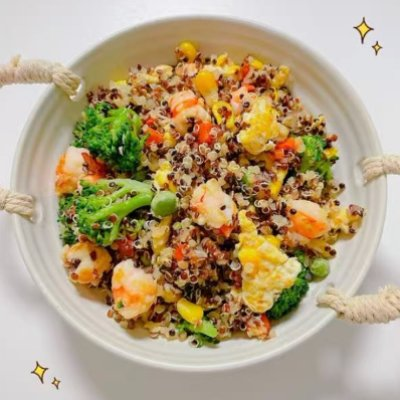
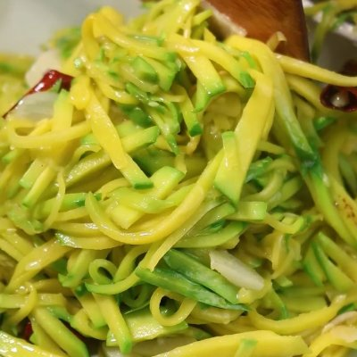
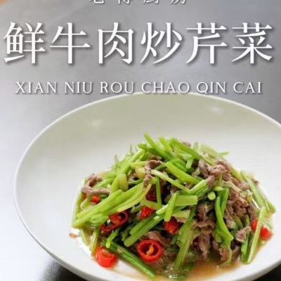
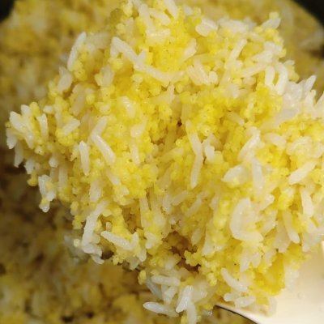
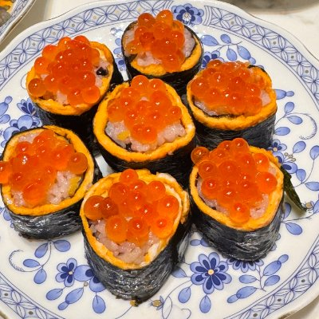
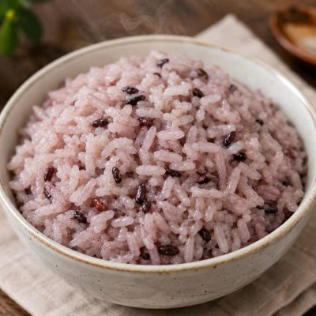

家庭菜单
Family Table · Day III
2026.07.30 星期四
早餐
Breakfast



杂蔬虾仁藜麦炒饭 ＋ 香港红薯 ＋ 温拌云南小瓜丝
Quinoa Fried Rice with Shrimp and Mixed Vegetables + Hong Kong Sweet Potato + Warm Tossed Shredded Zucchini
午餐
Lunch


鲜牛肉炒芹菜 ＋ 小米二米饭 ＋ 麻辣凉拌藕片
Fresh Beef Stir-fried Celery + Two-Grain Rice (Rice & Millet) + Spicy and Numbing Lotus Root Salad
下午茶
Afternoon Snack
无糖酸奶（生冷） ＋ 麦冬大麦茶
Sugar-free Yogurt (Cold) + Ophiopogon & Barley Tea
晚餐
Dinner



松茸竹荪菌菇鸡汤 ＋ 鱼籽寿司卷 ＋ 白米混少量16谷饭 ＋ 炒冬瓜片
Chicken Soup with Matsutake, Bamboo Fungus and Mixed Mushrooms + Salmon Roe Sushi Roll + White Rice mixed with 16-Grain Rice + Stir-fried Winter Melon Slices
📌 凉拌菜属生冷；温拌菜必须温热